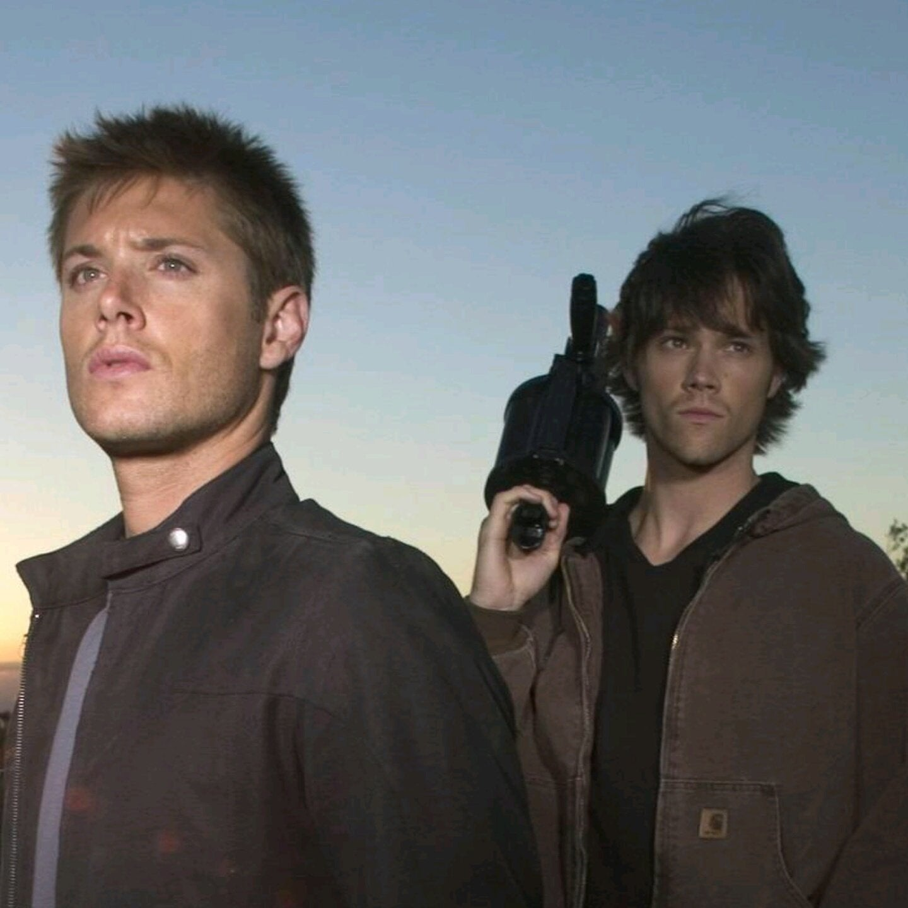

O que é Supernatunal?
Supernatural se trata de uma série de televisão, criada por Eric Kripke, que surgiu em 13 de setembro de 2005 no canal da Warner Bros. Entretanto, na atualidade, a série se encontra no canal CW, dos Estados Unidos. A série narra a história de dois irmãos, Sam Winchester e Dean Winchester, interpretados respectivamente por Jared Padalecki e Jensen Ackles, que caçam demônios, fantasmas, monstros e outras criaturas sobrenaturais no mundo. Na ideia original de Eric Kripke, os Winchesters não existiam, a história baseava-se em jornalistas que relatavam em suas notícias acontecimentos sobrenaturais. Como a The WB Television Network, emissora original do programa, não aprovou a ideia, Kripke reformulou o conceito da série e teve a aprovação. Os produtores executivos originais são Kripke, McG e Robert Singer.

As filmagens da série ocorrem em Vancouver, no estado da Colúmbia Britânica, no Canadá. Seu episódio piloto foi visto por mais de 5,69 milhões de telespectadores, e o índice de audiência dos quatro primeiros episódios levou ao canal The WB produzir uma primeira temporada completa de 22 episódios. Originalmente, Kripke planejou a série para três temporadas, mas posteriormente expandiu para cinco. A quinta temporada, que estreou em 10 de setembro de 2009, encerrou o enredo principal da série; no entanto, devido ao aumento da audiência da quarta e da quinta temporada, a The CW decidiu continuar a exibição de Supernatural. Em 31 de janeiro de 2019, a emissora The CW renovou a série para uma décima quinta e última temporada, contando com 20 episódios.